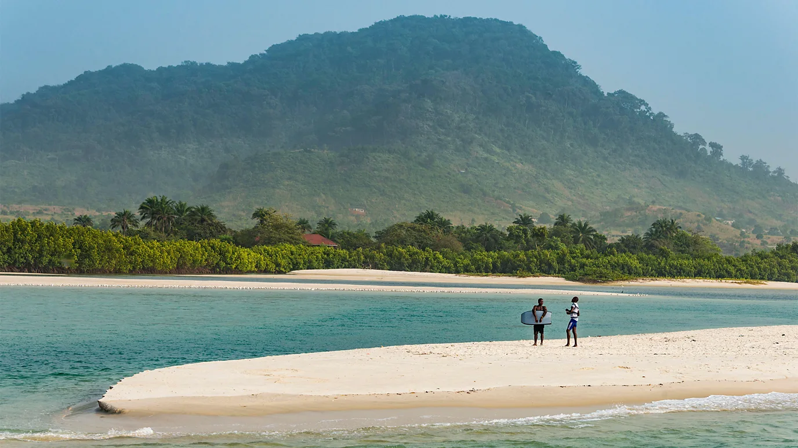
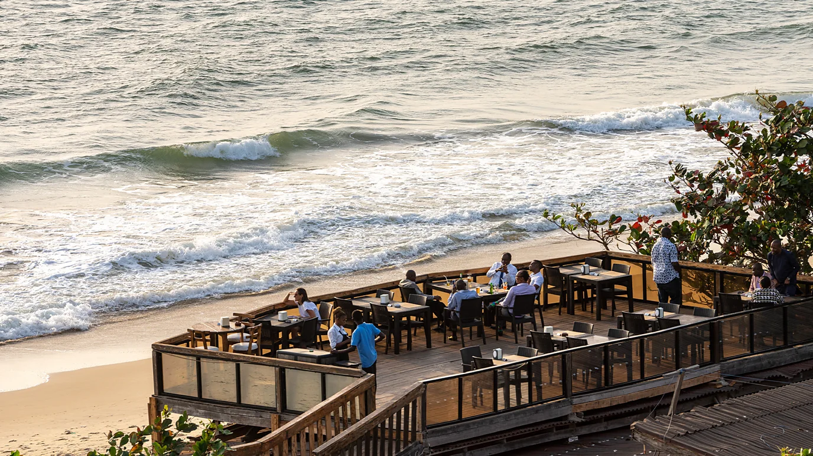
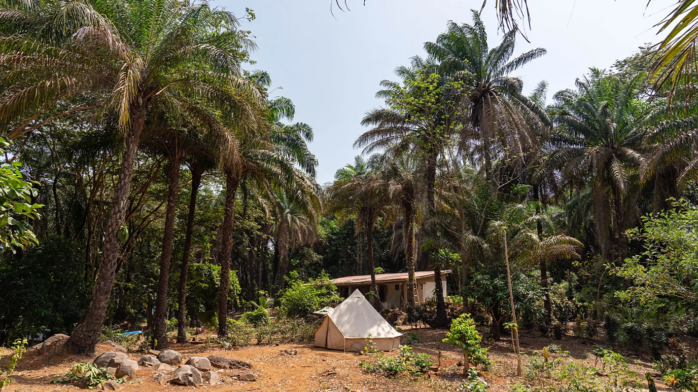

Sierra Leone: The West African nation welcoming the world
Long known as one of Africa's great beach destinations, a new generation of Sierra Leoneans is eager to show visitors that the formerly war-torn nation is now safe and reintroduce it to the world.
Sitting in the shade of a palm tree on Tokeh Beach, one of Sierra Leone's many postcard-worthy, white-sand waterfronts, Peter Momoh Bassie told me his story. "I am not ashamed to say I was part of the rebels because I was captured by force," he said, looking out over the emerald-coloured water. "I never killed anyone," he added.
Stories like Bassie's abound in Sierra Leone, a small nation in West Africa with more than 300km of coastline sandwiched between Guinea and Liberia. The country's 11-year civil war that ended in 2002 killed more than 50,000 people and displaced 2.6 million more. The rebels captured Bassie when he was just 11 years old. He was held captive for six years, managing to escape – and get caught again – three times.
In its pre-war tourism heyday of the 1980s, visitors were drawn to Sierra Leone's beachfront locations like Bureh, another white-sand haven an hour's drive south from its energetic capital, Freetown. But beyond its famous western coastline, this Scotland-sized nation boasts a stunningly diverse array of landscapes. In the south-east, the Gola rainforest and Tiwai Island Wildlife Sanctuary are home to chimpanzees, rare Diana monkeys, Bongo antelopes and more than 320 bird species. In the north, the Outamba-Kilimi National Park is a woodland savannah and sanctuary for hippos, elephants and colobus monkeys. And in the east, plateaus lead up to Mount Bintumani, one of West Africa's highest peaks.
Dubbed "the forgotten industry" by some residents, tourism is now becoming a focus for Sierra Leone once again. A multi-year World Bank development project is underway, training tourism staff, building infrastructure and developing ecotourism sites in areas like south-eastern Sierra Leone, where the elusive – and endangered – pygmy hippo lives.
Now, a new generation of Sierra Leoneans wants visitors to reconsider what their country is all about
A new beginning
"Growing up, I would hop around Tokeh Beach and Maroun Island, drink coconuts, get a lobster, and cook it for lunch," said Wissam Stanger Sfeile, a freediving coach who competed for Sierra Leone in the freediving world championships. In 2016, he co-founded Bafa, an eco-resort on the northern tip of Banana Islands, a lush trio of islands south of Freetown.
At Bafa, hammocks swayed in the breeze and glamping tents were spread throughout the shore as fresh lobster sizzled on the grill. Together with his wife Emily, Sfeile wanted to recreate the experience he had as a child. The eco-resort leases the land from the nearby fishing community of Dublin. Sfeile buys fish and produce from Dublin and employs youth from the community. "I wanted others to experience our nature in a space where guests could enjoy the beauty of trees, flowers and beaches," he explained.
Beyond their natural appeal, the country's islands were the setting of one of history's most tragic events: at the peak of the transatlantic slave trade in the 17th and 18th Centuries, they became one of the main departure points to the New World for enslaved West Africans.
According to the Slave Voyages digital initiative, roughly 400,000 people were sent through the British trade ports in Sierra Leone from 1501 to 1866. Of them, Bunce Island, was the most prolific. It's situated halfway between Senegal and Liberia, the area then known as the Rice Coast. From here, British slave traders sold people with a particular knowledge – how to grow rice – to plantation owners in South Carolina and Georgia. An estimated 30,000 people walked through the "door of no return" on this quiet island with a now-crumbling fort, exiled by colonial enslavers to the rice-growing colonies in the West Indies and North America.
The Banana Islands once served as the substation for Bunce, and that history is still visible today. The community of Dublin traces its roots to descendants of emancipated Africans who started returning to Sierra Leone after the abolition of slave trade by Britain in 1807. Rusted cannons and a mass grave near the Bafa resort hold the memory of those who tried to resist their fate.